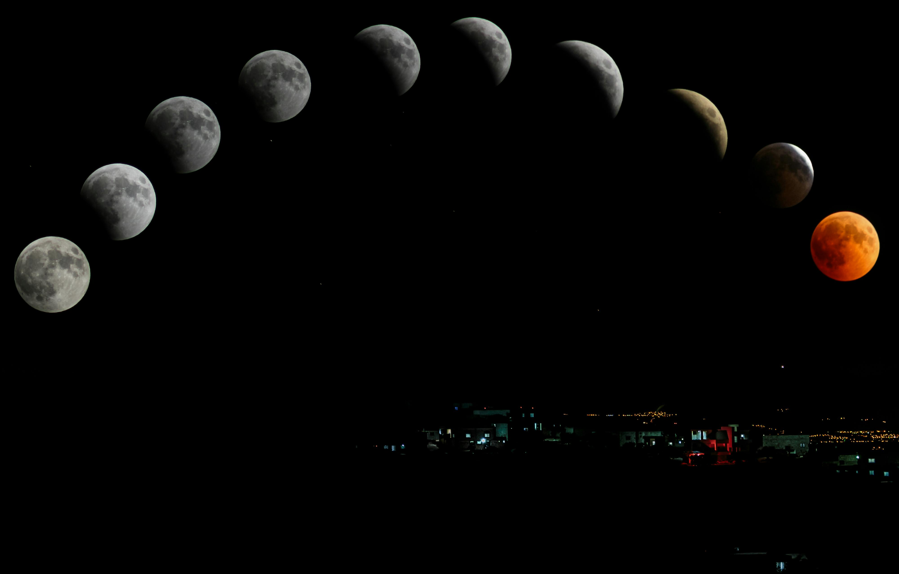

مقالات فلكية

ما هو تأثير تراجع عطارد على برجك؟
يعتبر تراجع عطارد من الظواهر الفلكية الأكثر تأثيراً على حياتنا اليومية. اكتشف كيف يؤثر على برجك...
أسرار الخارطة الفلكية: كيف تقرأها بنفسك؟
الخارطة الفلكية هي بصمة روحك لحظة ولادتك. تعلم معنا المبادئ الأساسية لقراءتها وفهم أسرار شخصيتك...

التوقعات الشهرية: ماذا يخبئ لك هذا الشهر؟
تحليل شامل لحركة الكواكب وتأثيرها على جميع الأبراج خلال الشهر القادم. استعد للفرص والتحديات...